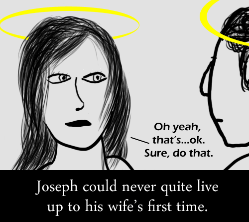

Comic JK 334
When I Feel Like It
⇤
<
?
>
⇥

⇤
<
?
>
⇥
Forum
.
RSS
.
Digg
.
Facebook
.
Reddit
.
Twitter
.
Stumbleupon
Enter your thoughts on number 334 here. Please, no spamming, trolling, phreaking or wanking to God/Mary. I don't quite get this one. >It's a somewhat crude reference to the birth of Jesus - Joseph's wife is Mary, and her first time was with God, in a manner of speaking - thus Joseph has trouble living up to it. IMO, not a worthwhile joke - people who will find it amusing have already thought of it, and people who won't get offended or ignore it. >>I personally get offended, but hey, I'm Christian >>>I am very Christian, and take no offense at this - I just disagree, as you probably wouldn't feel a thing! >>>>We have no idea how it felt; such details weren't recorded. >>>This is SMBC-like >>>>Yes it is. erm... Mary is supposed to still be a virgin *after* becoming pregnant... ( doctrine of the Roman Catholic Church and Orthodox Churches states she remained a virgin until after delivery... ) so... the official view is the pregnancy was caused by some form of magic rather than the more traditional cause... though some medieval theologians apparently believed Mary's ear may have erm... played a part... >Medieval theologians didn't get much right. Not being able to read may have played a part in that. >>They read and wrote in Latin, sir >>>Be fair, how else could we know what they thought? >>>No swearing, please. Let's all stay civil. >>>> well I'm quite sure it wasn't virgin but young lass. Some reports suggest that "virgin" in that era simply meant a girl who hasn't menstruated yet. Knowing this makes a lot of bible stories quite a bit different. > Aha ha ha that means gods a pedophile. So Jesus' first stuffed toy was a pedobear? > YUP! > God = PEDOBEAR This is pure win. lolololol